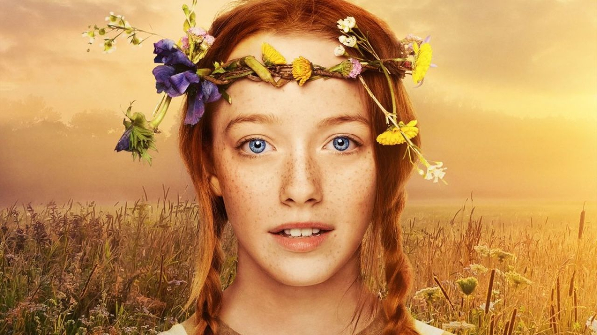

Anne with an E (también conocida como Anne por su nombre inicial en la primera temporada, y cuyo título significa "Anne, con una e") es una serie de televisión
canadiense basada en la serie de novelas Ana la de Tejas Verdes escritas por Lucy Maud Montgomery, y adaptada por la escritora y productora ganadora del premio Emmy,
Moira Walley-Beckett.1 Fue emitida por CBC entre 2017 y 2019 en Canadá y se encuentra disponible en Netflix a nivel mundial.La serie consta de un total de tres
temporadas, formando estas un conjunto de 27 episodios. La primera temporada está compuesta por siete episodios, y las temporadas 2 y 3 por 10 episodios cada una.La
duración de cada episodio oscila en un aproximado de 45 minutos, con excepción del primer episodio de la primera temporada, que tiene una duración de 1 hora y 28
minutos.Anne es una niña hablantina, con una gran imaginación y con muchas habilidades, las cuales habría adquirido a lo largo de su vida. Dentro de su pasado, sus
padres murieron a los tres meses de haber ella nacido y había vivido toda su vida entre un orfanato y varias casas en las que ayudaba en los quehaceres,también había sufrido malos tratos.
En noviembre de 2019, Netflix y CBC anunciaron la cancelación de la serie sin explicar ningún motivo. Esto generó un movimiento en redes sociales, mayoritariamente
en Twitter, de parte de los fans de la serie, para que esta sea renovada.
Netflix y CBC están uniendo fuerzas con Northwood Entertainment para llevar a cabo la serie Anne, basada en la novela Anne of Green Gables de Lucy Maud Montgomery.
Moira Walley-Beckett (Breaking Bad) es la guionista de la serie producida por Miranda de Pencier (Amor sin control) que cuenta con Niki Caro (Whale Rider,
En tierra de hombres). como directora del primer episodio.